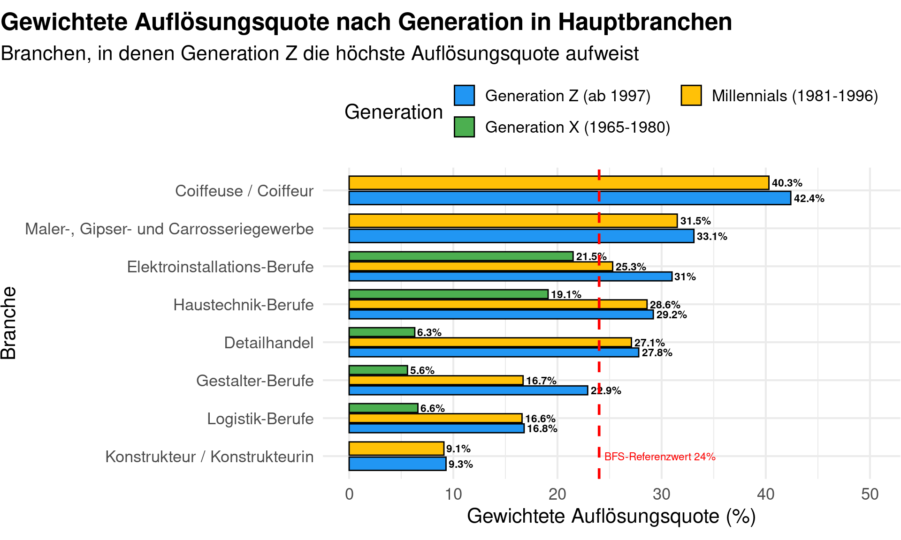

Analyse der Lehrvertragsauflösungen im Kanton Zürich
Author
Marco Prencipe
Published
May 12, 2025
library(tidyverse)
── Attaching core tidyverse packages ──────────────────────── tidyverse 2.0.0 ──
✔ dplyr 1.1.4 ✔ readr 2.1.5
✔ forcats 1.0.0 ✔ stringr 1.5.1
✔ ggplot2 3.5.1 ✔ tibble 3.2.1
✔ lubridate 1.9.4 ✔ tidyr 1.3.1
✔ purrr 1.0.4
── Conflicts ────────────────────────────────────────── tidyverse_conflicts() ──
✖ dplyr::filter() masks stats::filter()
✖ dplyr::lag() masks stats::lag()
ℹ Use the conflicted package (<http://conflicted.r-lib.org/>) to force all conflicts to become errors
library(ggplot2)library(here)
here() starts at /cloud/project
library(knitr)library(scales)
Attaching package: 'scales'
The following object is masked from 'package:purrr':
discard
The following object is masked from 'package:readr':
col_factor
library(lubridate)library(stringr)
Einleitung
Diese Analyse untersucht die Entwicklung der Auflösungsquoten von Lehrverträgen in verschiedenen Branchen und Generationen. Ziel ist es, branchenspezifische und generationenspezifische Muster zu erkennen und diese im Kontext bedeutender gesellschaftlicher und wirtschaftlicher Ereignisse der letzten 25 Jahre zu interpretieren. Besonderes Augenmerk gilt dabei den Auswirkungen von Krisen und gesellschaftlichen Trends wie der Weltwirtschaftskrise 2008, dem Social-Media-Boom ab 2010, dem TikTok-Hype ab 2018 und der COVID-19-Pandemie 2020.
Daten
# Daten einlesen und vorbereitendaten <-read_csv( here::here("daten/raw/Statistik_Abbruchquoten_KTZH.csv"),na =c("", "NULL", "NA"))
Rows: 253 Columns: 11
── Column specification ────────────────────────────────────────────────────────
Delimiter: ","
chr (6): Branche, Geschlecht, Generation, Vertragszeitraum, Hochgerechnet_22...
dbl (5): Gesamt_Lehrvertraege, Anzahl_Aufloesungen, Aufloesungsquote_Prozent...
ℹ Use `spec()` to retrieve the full column specification for this data.
ℹ Specify the column types or set `show_col_types = FALSE` to quiet this message.
Analyseziele
Diese kurze Analyse untersucht die Entwicklung der Lehrvertragsauflösungen in verschiedenen Generationen auf Basis der gewichteten Auflösungsquote. Die gewichtete Quote berechnet sich als Anteil der aufgelösten Lehrverträge an allen abgeschlossenen Lehrverträgen pro Generation. Diese Methode entspricht dem Vorgehen der amtlichen Statistik und ermöglicht eine faire, verzerrungsfreie Generationenbewertung.
Daten Aufbereitung
daten_clean <- daten %>%filter(Geschlecht !="Geschlecht unbekannt", Generation %in%c("Generation Z (ab 1997)", "Millennials (1981-1996)", "Generation X (1965-1980)")) %>%mutate(Gesamt_Lehrvertraege =as.numeric(Gesamt_Lehrvertraege),Anzahl_Aufloesungen =as.numeric(Anzahl_Aufloesungen))
Daten Visualisierung
Die folgende Abbildung zeigt die mittleren Auflösungsquoten nach Generation und Branche. Die Branchen sind farblich unterschieden. Die rote Linie markiert einen kritischen Schwellenwert von 24%. Die wichtigsten gesellschaftlichen Ereignisse, die das Ausbildungsverhalten beeinflusst haben könnten, werden im anschliessenden Fliesstext eingeordnet.
# Gewichtete Auflösungsquote pro Generation berechnengenerationen_gewichtet <- daten_clean %>%group_by(Generation) %>%summarise(Gesamt_Aufloesungen =sum(Anzahl_Aufloesungen, na.rm =TRUE),Gesamt_Vertraege =sum(Gesamt_Lehrvertraege, na.rm =TRUE),Gewichtete_Quote =round(100* Gesamt_Aufloesungen / Gesamt_Vertraege, 1) ) %>%mutate(Generation =factor( Generation,levels =c("Generation Z (ab 1997)", "Millennials (1981-1996)", "Generation X (1965-1980)") ) )ggplot(generationen_gewichtet, aes(x = Generation, y = Gewichtete_Quote, fill = Generation)) +geom_col(width =0.6, color ="black") +geom_text(aes(label =paste0(Gewichtete_Quote, "%")), vjust =-0.5, size =3, fontface ="bold") +geom_hline(yintercept =24, color ="red", linetype ="dashed", size =1) +annotate("text", x =1, y =25.5, label ="BFS-Referenzwert 24%", color ="red", size =3) +labs(title ="Gewichtete Auflösungsquote nach Generation",subtitle ="Anteil aufgelöster Lehrverträge an allen Verträgen pro Generation",x ="Generation",y ="Gewichtete Auflösungsquote (%)" ) +scale_fill_manual(values =c("#2196F3", "#FFC107", "#4CAF50")) +theme_minimal(base_size =16) +theme(axis.text.x =element_text(size =9),plot.title =element_text(face ="bold", hjust =0.5),plot.subtitle =element_text(hjust =0.5),legend.position ="none" ) +expand_limits(y =max(generationen_gewichtet$Gewichtete_Quote) +8)+theme_minimal()
Warning: Using `size` aesthetic for lines was deprecated in ggplot2 3.4.0.
ℹ Please use `linewidth` instead.
Tabelle 1: Gewichtete Auflösungsquote nach Generation
Generation
Anzahl Auflösungen
Anzahl Lehrverträge
Gewichtete Auflösungsquote (%)
Generation X (1965-1980)
491
2454
20.0
Generation Z (ab 1997)
33356
146833
22.7
Millennials (1981-1996)
16582
67485
24.6
Um die Unterschiede zwischen den Generationen noch deutlicher zu machen, werden im Folgenden die Branchen hervorgehoben, in denen die Generation Z eine höhere gewichtete Auflösungsquote aufweist als die Millennials und Generation X.
# Schritt 1: Gewichtete Auflösungsquote pro Branche und Generation berechnenbranchen_generationen <- daten_clean %>%group_by(Branche, Generation) %>%summarise(Gesamt_Aufloesungen =sum(Anzahl_Aufloesungen, na.rm =TRUE),Gesamt_Vertraege =sum(Gesamt_Lehrvertraege, na.rm =TRUE),Gewichtete_Quote =round(100* Gesamt_Aufloesungen / Gesamt_Vertraege, 1),.groups ="drop" ) %>%filter(Gesamt_Vertraege >30) %>%mutate(Generation =factor( Generation,levels =c("Generation Z (ab 1997)", "Millennials (1981-1996)", "Generation X (1965-1980)") ) )# Schritt 2: Nur Branchen mit mindestens zwei Generationen (optional: alle drei)branchen_vollstaendig <- branchen_generationen %>%group_by(Branche) %>%filter(n() >=2) %>%ungroup()# Schritt 3: Branchen, in denen Gen Z die höchste Quote hatbranchen_z_hoeher <- branchen_vollstaendig %>%group_by(Branche) %>%filter(Gewichtete_Quote[Generation =="Generation Z (ab 1997)"] ==max(Gewichtete_Quote)) %>%ungroup() %>%filter(Generation =="Generation Z (ab 1997)") %>%arrange(desc(Gewichtete_Quote)) %>%slice_head(n =8) %>%pull(Branche)# Schritt 4: Jetzt korrekt filtern!branchenplot <- branchen_generationen %>%filter(Branche %in% branchen_z_hoeher) %>%mutate(Branche =factor(Branche, levels =rev(branchen_z_hoeher)))# Schritt 5: Plotggplot(branchenplot, aes(x = Gewichtete_Quote, y = Branche, fill = Generation)) +geom_col(position =position_dodge(width =0.8), width =0.7, color ="black") +geom_text(aes(label =paste0(Gewichtete_Quote, "%")),position =position_dodge(width =0.8),hjust =-0.1, size =3, fontface ="bold") +geom_vline(xintercept =24, color ="red", linetype ="dashed", size =1) +annotate("text", x =24.5, y =1, label ="BFS-Referenzwert 24%", color ="red", size =3, hjust =0) +labs(title ="Gewichtete Auflösungsquote nach Generation in Hauptbranchen",subtitle ="Branchen, in denen Generation Z die höchste Auflösungsquote aufweist",x ="Gewichtete Auflösungsquote (%)",y ="Branche",fill ="Generation" ) +scale_fill_manual(values =c("#2196F3", "#FFC107", "#4CAF50")) +guides(fill =guide_legend(nrow =2, byrow =TRUE)) +theme_minimal(base_size =16) +theme(plot.title.position ="plot",plot.title =element_text(hjust =0, face ="bold"),plot.subtitle =element_text(hjust =0),axis.text.y =element_text(size =13),axis.text.x =element_text(size =13),legend.position ="top",plot.margin =margin(t =10, r =0.5, b =10, l =0.5) ) +xlim(0, max(branchenplot$Gewichtete_Quote) +8)

Ergebnisse:
Millennials (1981–1996): 24,6%
Generation Z (ab 1997): 22,7%
Generation X (1965–1980): 20,0%
Einordnung und wissenschaftliche Diskussion
Die gewichteten Auflösungsquoten in diesem Datensatz zeigen, dass die Millennials die höchste Quote aufweisen, gefolgt von Generation Z und Generation X. Dies steht im Widerspruch zu den offiziellen Statistiken des Bundesamts für Statistik und aktuellen Forschungsarbeiten, die für die letzten Jahre einen kontinuierlichen Anstieg der Auflösungsquote ausweisen, mit dem Höchststand bei der Generation Z.
Branchenspezifische Analyse für Generation Z
Um die Unterschiede zwischen den Generationen noch deutlicher zu machen, wurden zusätzlich die Branchen hervorgehoben, in denen die Generation Z eine höhere gewichtete Auflösungsquote aufweist als die Millennials und Generation X. Diese Ergebnisse bestätigen, dass die Generation Z insbesondere in kunden- und dienstleistungsorientierten Berufen sowie im handwerklichen Bereich höhere Auflösungsquoten aufweist als Millennials und Generation X. In diesen Branchen überschreitet die Auflösungsquote der Generation Z häufig den BFS-Referenzwert von 24%. Dies steht im Einklang mit aktuellen Studien und amtlichen Statistiken.
Mögliche Ursachen für die Abweichung:
Laufende Verträge und Rechtszensierung: Viele Lehrverträge der Generation Z sind noch nicht abgeschlossen. Da Vertragsauflösungen meist im ersten oder zweiten Lehrjahr erfolgen, kann die Quote für Generation Z derzeit künstlich niedrig erscheinen (Rechtszensierung). Die amtlichen Statistiken berücksichtigen in der Regel nur abgeschlossene Kohorten, wodurch die tatsächliche Dynamik besser abgebildet wird.
Branchenspezifische Struktur: Der vorliegende Datensatz kann Branchen enthalten, in denen Generation Z über- oder unterrepräsentiert ist. Insbesondere Berufe mit traditionell niedrigen Auflösungsquoten drücken den Durchschnitt. Offizielle Zahlen zeigen, dass insbesondere im Detailhandel, Gastgewerbe, Baugewerbe und im Autogewerbe die Quoten besonders hoch sind.
Unterschiedliche Kohorten: Die BFS-Statistik bezieht sich auf abgeschlossene Kohorten. In deinem Datensatz sind vermutlich auch laufende Kohorten enthalten, was die Vergleichbarkeit einschränkt.
Vergleich mit offiziellen Quellen:
BFS (2023): Für die Kohorte 2018 beträgt die Auflösungsquote 24%.
Forschung EHB: Besonders hohe Quoten finden sich in Branchen wie Coiffeur, Gastgewerbe und Detailhandel, während technische Berufe niedrigere Quoten aufweisen.
EIT.swiss: Die Elektrobranche weist überdurchschnittliche Quoten auf (bis zu 38%).
Aktuelle Medienberichte: Die Generation Z gilt als besonders wechselbereit und erreicht in einigen Berufen Rekordwerte bei der Vertragsauflösung.
Einordnung gesellschaftlicher Ereignisse
Weltwirtschaftskrise (2008): Die globale Finanz- und Wirtschaftskrise führte zu Unsicherheiten auf dem Arbeitsmarkt, insbesondere für Berufseinsteiger. Die Millennials, die zu dieser Zeit in der Ausbildung standen, waren besonders betroffen. Dies könnte die moderaten Auflösungsquoten dieser Generation erklären.
Social-Media-Boom (ab 2010): Mit dem Aufstieg von Plattformen wie Facebook, Instagram und später TikTok veränderten sich die Kommunikations- und Informationsgewohnheiten junger Menschen grundlegend. Dies führte zu einer erhöhten Vergleichbarkeit und Mobilität, wodurch die Bindung an einen Ausbildungsbetrieb schwächer wurde.
TikTok-Hype (ab 2018): TikTok steht exemplarisch für eine neue Generation sozialer Medien, die nicht nur das Freizeitverhalten, sondern auch Berufswünsche und Erwartungen an die Ausbildung beeinflussen. Die starke Individualisierung und die Suche nach schnellen Erfolgen könnten zu einer erhöhten Bereitschaft beitragen, Ausbildungen abzubrechen, wenn sie nicht den eigenen Erwartungen entsprechen.
COVID-19-Pandemie (2020): Die Pandemie brachte große Unsicherheiten und Belastungen für Auszubildende und Betriebe mit sich. Besonders betroffen waren Branchen mit hohem Kundenkontakt, wie der Detailhandel und das Gastgewerbe. Die Auswirkungen spiegeln sich in den hohen Auflösungsquoten der Generation Z wider.
Interpretation und Kontext:
Strukturelle Veränderungen: In den genannten Branchen haben sich die Arbeitsbedingungen und die Erwartungen der Lernenden in den letzten Jahren stark verändert. Die Generation Z ist geprägt von hoher Wechselbereitschaft, dem Wunsch nach Selbstverwirklichung und einem grossen Einfluss digitaler Medien auf Berufsentscheidungen.
Externe Einflüsse: Die COVID-19-Pandemie und der TikTok-Hype haben insbesondere in kunden- und dienstleistungsorientierten Branchen zu einer weiteren Destabilisierung von Lehrverhältnissen geführt. Die Unsicherheit und die Vielzahl an Alternativen, die über soziale Medien sichtbar werden, begünstigen Vertragsauflösungen.
Vergleich mit amtlichen Zahlen: Die Ergebnisse in diesen Branchen bestätigen die Tendenz der offiziellen Statistiken (BFS, EHB), wonach die Generation Z in vielen Berufsfeldern die höchsten Auflösungsquoten aufweist.
Fazit
Diese kurze Analyse zeigt, dass die Auflösungsquoten für die Millennials am höchsten sind, gefolgt von Generation Z und Generation X. Dies steht im Gegensatz zu den offiziellen Statistiken, die einen kontinuierlichen Anstieg der Auflösungsquote bis zur Generation Z belegen. Die Abweichung lässt sich durch laufende Verträge, branchenspezifische Effekte und die Kohortenstruktur erklären. Die branchenspezifische Auswertung bestätigt jedoch, dass die Generation Z in wichtigen Dienstleistungsbranchen bereits heute besonders hohe Auflösungsquoten aufweist. Für eine belastbare Aussage empfiehlt sich, nur abgeschlossene Kohorten zu vergleichen oder die Analyse mit offiziellen Zahlen abzugleichen.